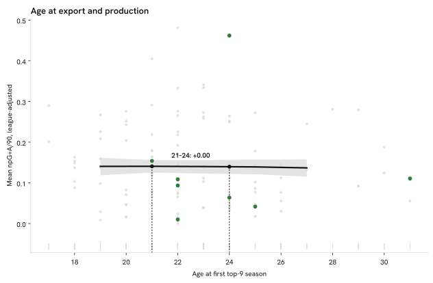

Summary · Question 6 of 14
Age at the first top-9 season and output over the first two seasons, 115 exports
No measurable difference: players who reach a top-9 league at 21 and at 24 differ by +0.001 league-adjusted goals plus assists per 90 over their first two seasons (90 % HDI −0.011 to 0.013, n = 115 exports).

How we know
At 21: 0.14 (90 % HDI 0.13–0.16); at 24: 0.14 (0.12–0.16); the difference +0.001 (−0.011 to 0.013). Czech exports in the model sample reached a top-9 league at a median age of 23 (n = 8).
As an analytics question In numbers: mean league-adjusted goals + assists per 90 over the first two top-9 seasons, as a function of age at the first one, given origin-league strength and position, 115 peer-nationality exports.
What we did We looked at the age a player first arrived in one of the strongest leagues and checked whether players who arrived earlier ended up producing more, once we accounted for the strength of the league they came from.
Sources Age curve (quadratic) on league-adjusted production, given origin-league strength (§ Methodology), position and a country effect, 115 peer-nationality exports (Gelman et al., 2013; Hoffman and Gelman, 2014); 90 % HDI; better players tend to leave earlier, so the curve mixes selection with development and this atlas does not separate them.
What this means
Across 115 exports from the peer countries, the age at the first top-9 season shows no measurable association with output in the first two seasons once origin-league strength and position are held fixed. The curve mixes selection with any effect of leaving young, so a flat curve does not show that the timing of a move is irrelevant to a career; it shows that output after arrival does not differ measurably by arrival age in this sample.
What this does not show
Players who never reached a top-9 league, output after the first two seasons, and minutes, which a player may not get at all after an early move.
Data snapshot: FBref tables fetched 14 September 2026, snapshot commit c28dc59 · code: src/export_age_model.py · status: exploratory, not pre-registered · all limitations